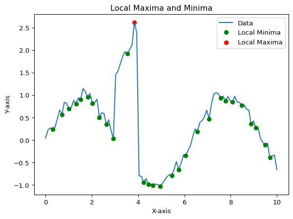
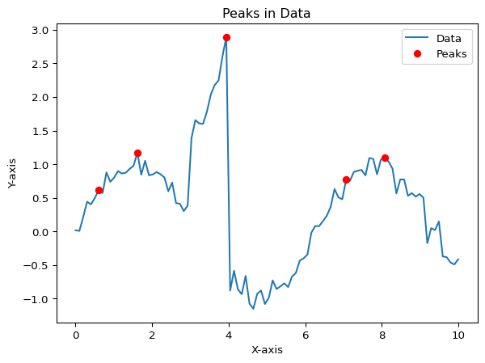
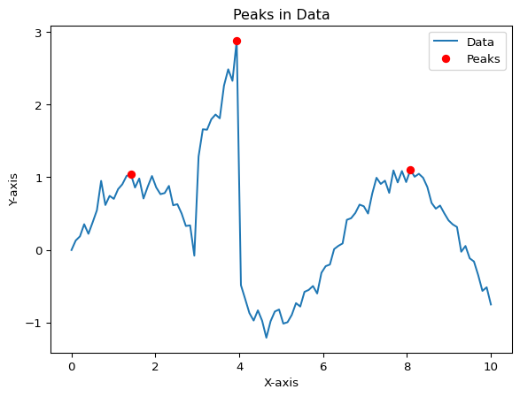
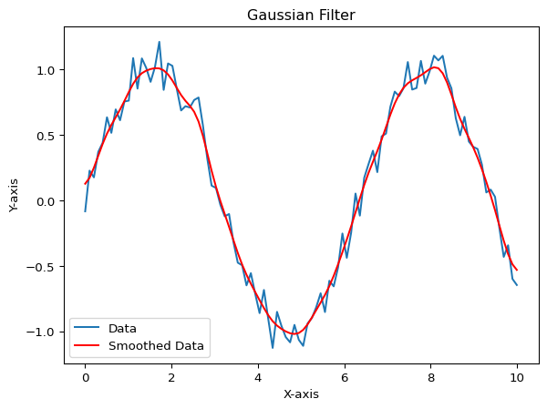
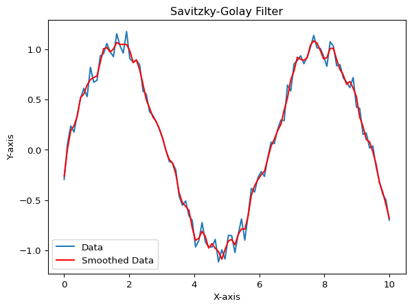

Spectroscopy is one of the most used experimental techniques in chemistry e.g.:
UV/Vis spectroscopy
IR spectroscopy
NMR spectroscopy
Mass spectroscopy
The analysis of spectroscopy needs often some preprocessing steps e.g.:
Baseline correction
Smoothing
Normalization
Peak assignment
Peak fitting
Peak integration
Peak deconvolution
Feature Detection
In spectroscopy data, peaks are often the most important features.
Maxima and minima are often used to identify the peaks in the data.
Global maxima and minima can be found using the min and max, np.min and np.max or df['column_name'].min() and df['column_name'].max() functions.
Local maxima and minima can be found also by using the argrelextrema function from the scipy.signal module.
import numpy as npfrom scipy.signal import argrelextremaimport matplotlib.pyplot as plt# Generate some data transmission datax = np.linspace(0, 10, 100)y = np.sin(x) + np.random.normal(0, 0.1, x.size)y[30:40] = np.exp(-y[30:40]) +0.5# Find local maxima and minimalocal_max = argrelextrema(y, np.greater,order=200)[0]local_min = argrelextrema(y, np.less)[0]# Plot the dataplt.plot(x, y, label='Data')plt.plot(x[local_min], y[local_min], 'o', color='green', label='Local Minima')plt.scatter(x[local_max], y[local_max], color='red', label='Local Maxima')plt.ylabel('Y-axis')plt.xlabel('X-axis')plt.title('Local Maxima and Minima')plt.legend()plt.show()

find_peaks function from the scipy.signal module can be used to find the peaks in the data. It finds the local maxima in the data and returns the indices of the peaks. If you want to find the minima, you can simply invert the data by multiplying it with -1.
import numpy as npimport matplotlib.pyplot as pltfrom scipy.signal import find_peaks# Generate some datax = np.linspace(0, 10, 100)y = np.sin(x) + np.random.normal(0, 0.1, x.size)y[30:40] = np.exp(-y[30:40]) +0.5# Find peakspeaks, _ = find_peaks(y, height=0.5, distance=10)# Plot the dataplt.plot(x, y, label='Data')plt.plot(x[peaks], y[peaks], 'o', color='red', label='Peaks')plt.ylabel('Y-axis')plt.xlabel('X-axis')plt.title('Peaks in Data')plt.legend()plt.show()

You can also use the height, threshold, distance, prominence and width parameters to filter the peaks to enhance the peak detection.
height: Minimum height of the peaks
threshold: Minimum vertical distance to its neighboring samples
distance: Minimum horizontal distance (in samples) between neighboring peaks
prominence: Minimum prominence of the peaks
import numpy as npimport matplotlib.pyplot as pltfrom scipy.signal import find_peaks# Generate some datax = np.linspace(0, 10, 100)y = np.sin(x) + np.random.normal(0, 0.1, x.size)y[30:40] = np.exp(-y[30:40]) +0.5# Find peakspeaks, _ = find_peaks(y, height=0.5, distance=10, prominence=0.5, width=1)# Plot the dataplt.plot(x, y, label='Data') plt.plot(x[peaks], y[peaks], 'o', color='red', label='Peaks')plt.ylabel('Y-axis')plt.xlabel('X-axis')plt.title('Peaks in Data')plt.legend()plt.show()

Smoothing
Often data is noisy and needs to be smoothed before further analysis.
Moving average
Weighted moving average
Gaussian filter
Savitzky-Golay filter
Moving Average
import numpy as npimport matplotlib.pyplot as plt# Generate some datax = np.linspace(0, 10, 100)y = np.sin(x) + np.random.normal(0, 0.1, x.size)# Apply the moving averagewindow_size =5smoothed_data =np.convolve(y, np.ones(window_size)/window_size, mode='same')# Plot the dataplt.plot(x, y, label='Data')plt.plot(x, smoothed_data, label='Smoothed Data', color='red')plt.ylabel('Y-axis')plt.xlabel('X-axis')plt.title('Moving Average')plt.legend()plt.show()
Gaussian Filter
import numpy as npimport matplotlib.pyplot as pltfrom scipy.ndimage import gaussian_filter1d# Generate some datax = np.linspace(0, 10, 100)y = np.sin(x) + np.random.normal(0, 0.1, x.size)# Apply the Gaussian filtersigma =2smoothed_data = gaussian_filter1d(y, sigma=sigma)# Plot the dataplt.plot(x, y, label='Data')plt.plot(x, smoothed_data, label='Smoothed Data', color='red')plt.ylabel('Y-axis')plt.xlabel('X-axis')plt.title('Gaussian Filter')plt.legend()plt.show()

Savitzky-Golay Filter
import numpy as npimport matplotlib.pyplot as pltfrom scipy.signal import savgol_filter# Generate some datax = np.linspace(0, 10, 100)y = np.sin(x) + np.random.normal(0, 0.1, x.size)# Apply the Savitzky-Golay filterwindow_size =5poly_order =2smoothed_data = savgol_filter(y, window_size, poly_order)# Plot the dataplt.plot(x, y, label='Data')plt.plot(x, smoothed_data, label='Smoothed Data', color='red')plt.ylabel('Y-axis')plt.xlabel('X-axis')plt.title('Savitzky-Golay Filter')plt.legend()plt.show()

Baseline Correction
A baseline correction is often needed to remove background noise from the signal and
The baseline correction can be done by different methods e.g.:
Polynomial fitting
Spline fitting
Minimum value fitting
Moving average etc.
There exists also a package called pybaselines which can be used to correct the baseline of the data.
import numpy as npimport matplotlib.pyplot as pltfrom scipy.ndimage import gaussian_filter1dfrom pybaselines import Baselinefrom pybaselines.utils import gaussian# Generate some datax = np.linspace(20, 1000, 1000)signal = (+ gaussian(x, 6, 240, 5)+ gaussian(x, 8, 350, 11)+ gaussian(x, 15, 400, 18)+ gaussian(x, 6, 550, 6)+ gaussian(x, 13, 700, 8)+ gaussian(x, 9, 800, 9)+ gaussian(x, 9, 880, 7))baseline =5+6* np.exp(-(x -40) /30) + gaussian(x, 5, 1000, 300)noise = np.random.default_rng(0).normal(0, 0.1, len(x))y = signal + baseline + noise# Use the Baseline class to fit the baselinebaseline_fitter = Baseline(x_data=x)# The baseline_fitter object can be used to fit the baseline with different methods in that case the Asymmetrically Reweighted Penalized Least Squares (ARPLS)stiff_baseline = baseline_fitter.arpls(y, lam=5e5)[0]# Correct the data by subtracting the baselinedata_corrected = y - stiff_baseline# Create subplotsfig, axs = plt.subplots(3, 1, figsize=(8, 12))axs[0].plot(x, y, label='Data')axs[0].plot(x, signal, label='Signal')axs[0].plot(x, baseline, label='Baseline')axs[0].set_ylabel('Y-axis')axs[0].set_xlabel('X-axis')axs[0].set_title('Data with Baseline')axs[0].legend()axs[1].plot(x, y, label='Data')axs[1].plot(x, stiff_baseline, label='Stiff Baseline')axs[1].set_ylabel('Y-axis')axs[1].set_xlabel('X-axis')axs[1].set_title('Stiff Baseline')axs[1].legend()axs[2].plot(x, y, label='Data')axs[2].plot(x, data_corrected, label='Corrected Data')axs[2].set_ylabel('Y-axis')axs[2].set_xlabel('X-axis')axs[2].set_title('Corrected Data')axs[2].legend()plt.tight_layout()plt.show()
Source Code
---title: "Analysis of Spectroscopy Data"execute: echo: True eval: Truecode-links: - text: "Open in Colab" href: "https://colab.research.google.com/github/stkroe/PythonForChemists/blob/main/course/notebooks/Spectroscopy.ipynb" icon: "laptop" - text: "Download Code" href: "https://github.com/stkroe/PythonforChemists/blob/main/course/notebooks/Spectroscopy.ipynb" icon: "journal"---Difficulty level: <span style="color:#2B7492">{{< bi star-fill >}} {{< bi star-fill >}} </span>## Spectroscopy Data Analysis {.unnumbered}Spectroscopy is one of the most used experimental techniques in chemistry *e.g.*:- UV/Vis spectroscopy- IR spectroscopy- NMR spectroscopy- Mass spectroscopyThe analysis of spectroscopy needs often some preprocessing steps *e.g.*:- Baseline correction- Smoothing- Normalization- Peak assignment- Peak fitting- Peak integration- Peak deconvolution### Feature Detection {.unnumbered}In spectroscopy data, peaks are often the most important features. Maxima and minima are often used to identify the peaks in the data.Global maxima and minima can be found using the `min` and `max`, `np.min` and `np.max` or `df['column_name'].min()` and `df['column_name'].max()` functions.Local maxima and minima can be found also by using the `argrelextrema` function from the `scipy.signal` module.```{python}import numpy as npfrom scipy.signal import argrelextremaimport matplotlib.pyplot as plt# Generate some data transmission datax = np.linspace(0, 10, 100)y = np.sin(x) + np.random.normal(0, 0.1, x.size)y[30:40] = np.exp(-y[30:40]) +0.5# Find local maxima and minimalocal_max = argrelextrema(y, np.greater,order=200)[0]local_min = argrelextrema(y, np.less)[0]# Plot the dataplt.plot(x, y, label='Data')plt.plot(x[local_min], y[local_min], 'o', color='green', label='Local Minima')plt.scatter(x[local_max], y[local_max], color='red', label='Local Maxima')plt.ylabel('Y-axis')plt.xlabel('X-axis')plt.title('Local Maxima and Minima')plt.legend()plt.show()````find_peaks` function from the `scipy.signal` module can be used to find the peaks in the data.It finds the local maxima in the data and returns the indices of the peaks.If you want to find the minima, you can simply invert the data by multiplying it with -1.```{python}import numpy as npimport matplotlib.pyplot as pltfrom scipy.signal import find_peaks# Generate some datax = np.linspace(0, 10, 100)y = np.sin(x) + np.random.normal(0, 0.1, x.size)y[30:40] = np.exp(-y[30:40]) +0.5# Find peakspeaks, _ = find_peaks(y, height=0.5, distance=10)# Plot the dataplt.plot(x, y, label='Data')plt.plot(x[peaks], y[peaks], 'o', color='red', label='Peaks')plt.ylabel('Y-axis')plt.xlabel('X-axis')plt.title('Peaks in Data')plt.legend()plt.show()```You can also use the `height`, `threshold`, `distance`, `prominence` and `width` parameters to filter the peaks to enhance the peak detection.- `height`: Minimum height of the peaks- `threshold`: Minimum vertical distance to its neighboring samples- `distance`: Minimum horizontal distance (in samples) between neighboring peaks- `prominence`: Minimum prominence of the peaks```{python}import numpy as npimport matplotlib.pyplot as pltfrom scipy.signal import find_peaks# Generate some datax = np.linspace(0, 10, 100)y = np.sin(x) + np.random.normal(0, 0.1, x.size)y[30:40] = np.exp(-y[30:40]) +0.5# Find peakspeaks, _ = find_peaks(y, height=0.5, distance=10, prominence=0.5, width=1)# Plot the dataplt.plot(x, y, label='Data') plt.plot(x[peaks], y[peaks], 'o', color='red', label='Peaks')plt.ylabel('Y-axis')plt.xlabel('X-axis')plt.title('Peaks in Data')plt.legend()plt.show()```### Smoothing {.unnumbered}Often data is noisy and needs to be smoothed before further analysis.- Moving average- Weighted moving average- Gaussian filter- Savitzky-Golay filter**Moving Average**```{python}import numpy as npimport matplotlib.pyplot as plt# Generate some datax = np.linspace(0, 10, 100)y = np.sin(x) + np.random.normal(0, 0.1, x.size)# Apply the moving averagewindow_size =5smoothed_data =np.convolve(y, np.ones(window_size)/window_size, mode='same')# Plot the dataplt.plot(x, y, label='Data')plt.plot(x, smoothed_data, label='Smoothed Data', color='red')plt.ylabel('Y-axis')plt.xlabel('X-axis')plt.title('Moving Average')plt.legend()plt.show()```**Gaussian Filter**```{python}import numpy as npimport matplotlib.pyplot as pltfrom scipy.ndimage import gaussian_filter1d# Generate some datax = np.linspace(0, 10, 100)y = np.sin(x) + np.random.normal(0, 0.1, x.size)# Apply the Gaussian filtersigma =2smoothed_data = gaussian_filter1d(y, sigma=sigma)# Plot the dataplt.plot(x, y, label='Data')plt.plot(x, smoothed_data, label='Smoothed Data', color='red')plt.ylabel('Y-axis')plt.xlabel('X-axis')plt.title('Gaussian Filter')plt.legend()plt.show()```**Savitzky-Golay Filter**```{python}import numpy as npimport matplotlib.pyplot as pltfrom scipy.signal import savgol_filter# Generate some datax = np.linspace(0, 10, 100)y = np.sin(x) + np.random.normal(0, 0.1, x.size)# Apply the Savitzky-Golay filterwindow_size =5poly_order =2smoothed_data = savgol_filter(y, window_size, poly_order)# Plot the dataplt.plot(x, y, label='Data')plt.plot(x, smoothed_data, label='Smoothed Data', color='red')plt.ylabel('Y-axis')plt.xlabel('X-axis')plt.title('Savitzky-Golay Filter')plt.legend()plt.show()```### Baseline Correction {.unnumbered}A baseline correction is often needed to remove background noise from the signal and The baseline correction can be done by different methods *e.g.*:- Polynomial fitting- Spline fitting- Minimum value fitting- Moving averageetc.There exists also a package called [`pybaselines`](https://pybaselines.readthedocs.io/en/latest/) which can be used to correct the baseline of the data.```{python}!pip install pybaselines``````{python}import numpy as npimport matplotlib.pyplot as pltfrom scipy.ndimage import gaussian_filter1dfrom pybaselines import Baselinefrom pybaselines.utils import gaussian# Generate some datax = np.linspace(20, 1000, 1000)signal = (+ gaussian(x, 6, 240, 5)+ gaussian(x, 8, 350, 11)+ gaussian(x, 15, 400, 18)+ gaussian(x, 6, 550, 6)+ gaussian(x, 13, 700, 8)+ gaussian(x, 9, 800, 9)+ gaussian(x, 9, 880, 7))baseline =5+6* np.exp(-(x -40) /30) + gaussian(x, 5, 1000, 300)noise = np.random.default_rng(0).normal(0, 0.1, len(x))y = signal + baseline + noise# Use the Baseline class to fit the baselinebaseline_fitter = Baseline(x_data=x)# The baseline_fitter object can be used to fit the baseline with different methods in that case the Asymmetrically Reweighted Penalized Least Squares (ARPLS)stiff_baseline = baseline_fitter.arpls(y, lam=5e5)[0]# Correct the data by subtracting the baselinedata_corrected = y - stiff_baseline# Create subplotsfig, axs = plt.subplots(3, 1, figsize=(8, 12))axs[0].plot(x, y, label='Data')axs[0].plot(x, signal, label='Signal')axs[0].plot(x, baseline, label='Baseline')axs[0].set_ylabel('Y-axis')axs[0].set_xlabel('X-axis')axs[0].set_title('Data with Baseline')axs[0].legend()axs[1].plot(x, y, label='Data')axs[1].plot(x, stiff_baseline, label='Stiff Baseline')axs[1].set_ylabel('Y-axis')axs[1].set_xlabel('X-axis')axs[1].set_title('Stiff Baseline')axs[1].legend()axs[2].plot(x, y, label='Data')axs[2].plot(x, data_corrected, label='Corrected Data')axs[2].set_ylabel('Y-axis')axs[2].set_xlabel('X-axis')axs[2].set_title('Corrected Data')axs[2].legend()plt.tight_layout()plt.show()```